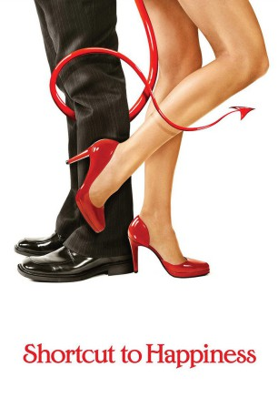

#5202 Shortcut to Happiness - Der Teufel steckt im Detail
Alternativ: Shortcut to Happiness (Englischer Titel)
 
 IMDB-Wertung: 5.6 / 10
IMDB-Wertung: 5.6 / 10  Metascore: 0
Metascore: 0 
Alec Baldwin agiert als Autor, der einen Pakt mit dem Teufel eingeht und sich nicht an die Abmachung hält. Mit dabei Jennifer Love Hewitt und Oscar-Preisträger Anthony Hopkins. Ein Schriftsteller verkauft seine Seele an den Teufel. Er will ein erfolgreicher Autor bei der New York Times werden und verspricht im Gegenzug, seine Seele in zehn Jahren dem Teufel zu vermachen.
Jahr: 2003
Dauer: 101 Minuten
FSK: 12
Land: USA Studio: Yari Film Group ReleasingTonspuren: DTS - ,
Untertitel: Englisch,
Auflösung: 1080p (1920x1072) Größe: 7372 MB
Genre: Drama, Komödie, Fantasy
Regisseur: Alec Baldwin
Drehbuch: Warner Vision Australia
Soundtrack:
Darsteller:
- Mary Ashton als Production Assistant
 Dan Aykroyd als Julius Jensen
Dan Aykroyd als Julius Jensen Alec Baldwin als Jabez Stone
Alec Baldwin als Jabez Stone Gregg Bello als Rick Fusco
Gregg Bello als Rick Fusco Bobby Cannavale als Cop
Bobby Cannavale als Cop- Jann Carl als Herself
 Kim Cattrall als Constance Hurry
Kim Cattrall als Constance Hurry Mike Doyle als Luke
Mike Doyle als Luke Darrell Hammond als Andrew Bailey
Darrell Hammond als Andrew Bailey- Jack Hartnett als Gay Waiter
 Jennifer Love Hewitt als The Devil
Jennifer Love Hewitt als The Devil Anthony Hopkins als Daniel Webster
Anthony Hopkins als Daniel Webster- Gustave Johnson als Cab Driver
- Canedy Knowles als Webster's Assistant
- Marni Lustig als 'Normal' Woman
 Peter Maloney als John Hardy
Peter Maloney als John Hardy- Terrence Mann als Art Dealer
- Barry Miller als Mike Weiss
- Ken Page als Clerk
 Amy Poehler als Molly Gilchrest
Amy Poehler als Molly Gilchrest- Rohan Quine als Nazi Officer
- Mark Steines als Himself
- Gay Talese als Himself
- Leia Thompson als Magazine Reporter
- Scott 'Carrot Top' Thompson als Himself
- Karen Ziemba als Mrs. Miller
- Kim Zimmer als Patty
- Jane DeNoble als Jabez's Crony , uncredited
- Jonathon Gentry als Marlon , uncredited
- Jason Evans Lee als Guy fighting for cab , uncredited
- Katherine O'Sullivan als Charlotte Bronte , uncredited
 Jason Patric als Ray , uncredited
Jason Patric als Ray , uncredited- Musto Pelinkovicci als Yuli , uncredited
 Martin Pfefferkorn als Rasputin , uncredited
Martin Pfefferkorn als Rasputin , uncredited George Plimpton als Himself , uncredited
George Plimpton als Himself , uncredited- Deborah Rayne als Salesgirl , uncredited
- David C. Roehm Sr. als Limo Driver , uncredited
 John Savage als Johnny , uncredited
John Savage als Johnny , uncredited- David Von Roehm als New Yorker , uncredited
- Philippe Vonlanthen als Philippe , uncredited
- Virl Andrick als Dick
- Ray Aranha als Mailman
- Kaniel Arocho als Skateboard Kid #1
- Jorge Arocho als Skateboard Kid #2
- Howard Atlee als Award Audience Man
- Antoni Cornacchione als Security Guard
- Bill Corsair als Aging Writer
- Grenville Cuyler als Taxi Hailer
- Calvert DeForest als Bailiff
- Marilyn Dobrin als Joan Jenson
Datei: X:\2003(N-Z)\Shortcut to Happiness - Der Teufel steckt im Detail (2003, FSK12, 1920x1072).mkv seit 29.12.2016
Festplatte: HD 2003-2004-2005(A-F)
 Es gibt insgesamt 46 Filme in der Gruppe '2003(N-Z)'
Es gibt insgesamt 46 Filme in der Gruppe '2003(N-Z)'